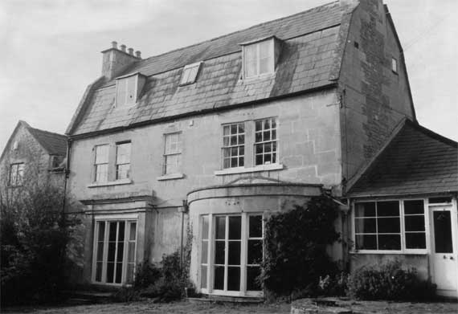

Type of building:
Attached small country house
Listing:
Grade ll
Plan and elevation:
Double pile (original house before remodelling being a single pile structure
of two or three units). Two-storey with attic dormers.
Summary of the probable main building
history:
Late 17th Century substantially extended and remodelled in the late 18th Century.
Further modifications and additions in the early 19th Century.

East elevation
Exterior:
The building is of ashlar construction with a plat band although the north gable
has a core of rubble and some apparently re-used ashlar blocks. The main house
is 2-storied with attics containing dormers under a slated mansard roof (gabled
gambrel) with coping stones on the verges. Each gable end has an ashlar stack.
There is a single storey ashlar extension to the north under a hipped roof and
with an ashlar stack. On the west elevation a projecting wing is centrally placed
in relation to the original house and under a pitched roof and with, in turn,
a side extension on each side under cat-slide roofs. This wing has a centrally
positioned entry with a round-headed fanlight. The east elevation has five first
floor windows, six-over-six sashes with relatively thick glazing bars, the outer
four windows being grouped into two pairs with wide central mullions. On the
ground floor of this elevation there is a slightly projecting square bay to
the left with applied pilasters and cornicing. The corresponding bay to the
right has been removed and replaced with a large bow, which upsets the symmetry
of the elevation. Both bays have fully glazed doors with reeded wood surrounds.
Interior:
Room G1 in the west wing is a spacious reception area containing a staircase
which has been modified but with open scroll stringing, probably about 1770.
The room contains a sealed fireplace, which, when temporarily removed during
repair work, revealed a small iron register plate fire of mid-late 19th Century
design. Under the stairs area, stone steps lead down to the cellar. Now guarded
by a wooden door, the steps at one time were accessed via a trap door, which
is now pinned to the cellar wall. Roof structure of this west wing contains
purlins tusk-tenoned into the principals, of about a late 18th Century date.
Room G3 in this wing has an inserted late 17th Century or early 18th Century
four-centred and chamfered stone fireplace. It is uncertain whether this has
been re-positioned from elsewhere in the property or whether it derives from
an outside source. Room G6 in the main house has a moulded ceiling cornice of
a vine and grapes motif with egg and dart below. This room has a set of six-panelled
double or bridal doors (six- panelled doors are general in the house). Room
G7 also contains a moulded ceiling cornice of vine leaf design. The east wall
of the cellar space under G6 possesses a two-light mullion window of ogee section.
On the first floor there are two iron grates - one is arched or of the
“dancing horseshoe” type of about 1860, the other of about 1770
labelled “Dale& Co.” (of Coalbrookdale). Both grates are modern
insertions but in the south rear room there is an iron hob grate of late 18th
Century pattern which is original to the house. There are some doors with iron
“L” hinges. The attic rooms have wide elm floorboards and two small
stone ogee-beaded moulded fireplaces, late 17th Century style, on the end walls
of the south and north rooms. In the small central rooms of the first floor
and attic levels the joists are laid along the length of the house as opposed
to cross wise as in the adjoining rooms and as is normal. These joists, exposed
in recent building work, rest on wooden beams reinforced in more recent times
with at least one RSJ. This represents an earlier stairwell rising from the
north wall of the room G6 through to the attic.
Stable Block to the west of the house.
Not measured. A two-storied ashlar building with plat band and slated pitched
roof and a gable end chimney stack. On the ground floor there are two 2-light
wood casement windows, one small square fixed-pane window and a wide central
door. Internally the stables have a stone slab floor, a wooden stall partition
with an iron grill and an iron manger. The first floor accommodation is accessed
to the right by an external straight stair with the entry platform supported
by two reeded cast iron pillars and lit by two six-over-six sash windows with
iron balconettes. Internally one small beaded stone fireplace is situated on
the gable end wall.
Date & development:
The house is believed to be of late 17th Century origin on the evidence of the
wall thickness in the core of the house, the mullion surviving in the cellar,
the part rubble north wall and the clear single pile, two unit plan of the main
house. The house was apparently subject to a major re-modelling in the later
18th Century, probably the 1760’s or 70’s, including the removal
of the original staircase and a replacement put into a new west wing, to provide
a fashionable compact and symmetrical house with two square bays on the east
façade. The bow window was subsequently inserted in replacement of one
of the square bays and on stylistic grounds is probably dateable to the first
quarter of the 19th Century. A date stone on the single storey north extension
reads “OCT 19 - NFP - 1847”, which is likely to be a
correct indication of the extension’s construction date. It then appeared
to have had two external doors (now blocked) and was probably built to improve
the servicing arrangements. The stables (with servants accommodation over) are
possibly contemporaneous and signify a gentleman’s residence independent
of the nearby farm even if there was joint ownership at an earlier date. The
1840 Tithe Apportionment Schedule shows the property to be owned by Nathaniel
Cowdry and occupied by Crawford Carleton whereas the farm at this date was in
the ownership of Henry Walters and let to Thomas Clark.
References:
- 1840 Batheaston Tithe Map and Apportionment Schedule, Somerset Record Office
- Bath & County Graphic Magazine - Bath Reference Library
Reference Pictures
| West Elevation |
Early 19th century stables |
Inserted late 17th - early
18th century depressed four-centred and chamfered fireplace |
| Inserted late 18th century hob grate
by Dale & Co. |
Basement mullion window of ogee section |
Ceiling plasterwork |
| Ceiling plasterwork |
Survey Drawings
| Ground Plan |
Cellar Plan |
Section |